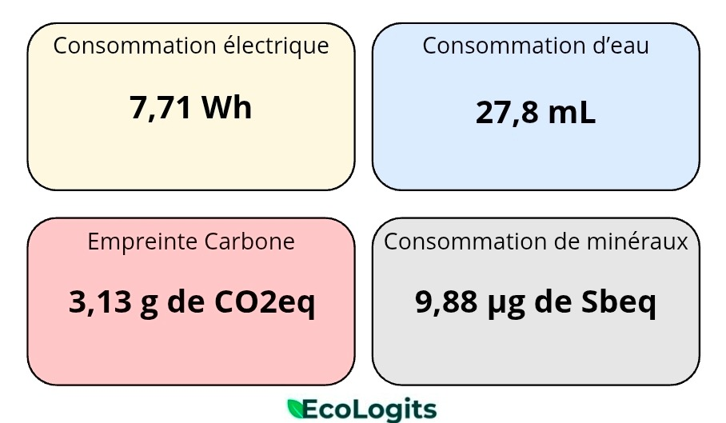
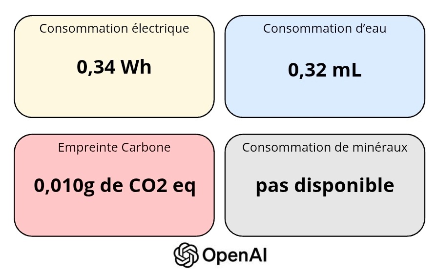
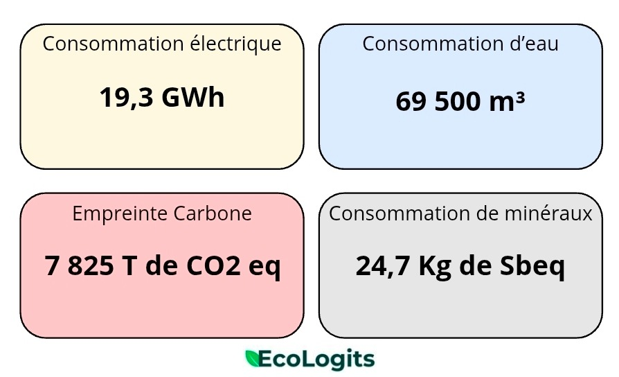
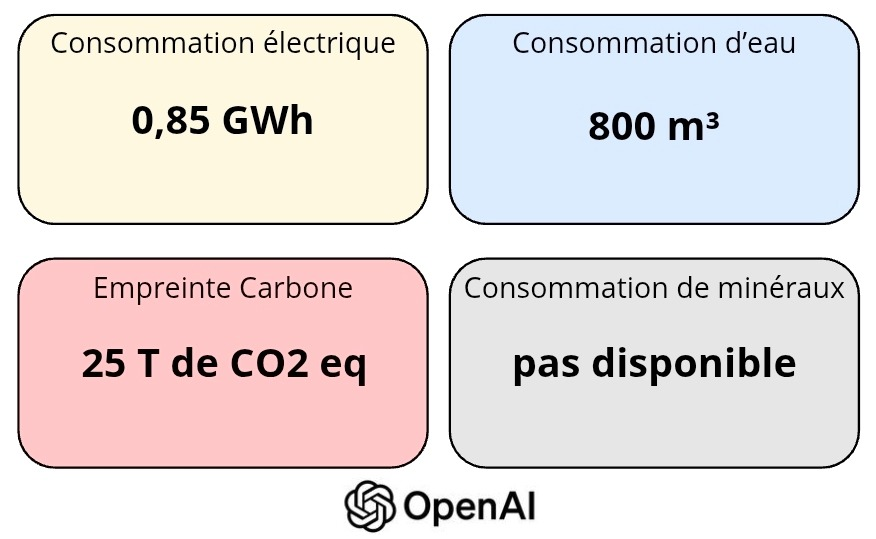

Que coûte une conversation avec l'IA à l'environnement ?
Électricité, eau, carbone et minéraux : ce que représente une requête à ChatGPT, puis une journée entière de requêtes, selon OpenAI et selon EcoLogits.
Ce qui se passe quand on pose une question
Lors de l'envoi de votre simple question à une IA, tout un processus se met en marche.
Votre question est alors décomposée et analysée par l'IA. Cette dernière vous répondra par tokens. Les tokens sont de petites unités de données issues de la décomposition d'informations plus importantes. Ainsi, les modèles d'IA utilisent les tokens pour apprendre les relations entre eux et débloquer des capacités comme la prédiction, la génération et le raisonnement.
Globalement, pour un texte en anglais, 1 token correspond environ à 4 caractères, soit environ ¾ d'un mot : environ 100 tokens pour 75 mots. Un mot peut être divisé en différents tokens selon son orthographe, ses majuscules et le texte qui l'entoure.
Par exemple, « fleur », « Fleur » et « fleur » précédé d'une espace ne contiennent pas un texte identique : le dernier comporte une espace initiale, ce qui donne un calcul de tokens différent. La plupart des conversations demandent en moyenne entre 0 et 1 136 tokens.
Les calculs qu'effectue l'IA pour prédire sa réponse et l'ajuster à votre question, selon le nombre de tokens, ont un coût en électricité, consomment de l'eau et rejettent du CO2.
Cependant, les zones d'ombre concernant l'IA sont très denses, à cause d'un manque de publications ou encore de la confidentialité des entreprises. Cela limite l'analyse :
- de l'impact des essais et des améliorations des IA ;
- du coût environnemental.
Ce que coûte une requête
De ce fait, quel est donc ce réel coût à l'échelle individuelle ? Comment l'estimer ?
Prenons ChatGPT, l'IA la plus utilisée aujourd'hui, et regardons l'impact de son usage pour différentes demandes, en prenant pour base les requêtes simples (questions, rapide discussion, etc.).
Imaginons : une question vous taraude, machinalement vous ouvrez ChatGPT et lui exposez votre requête. Celui-ci vous répond. Mais qu'est-ce que cela représente ? Et si tout le monde avait une requête similaire le même jour ?
Pour cela, nous nous baserons sur deux jeux de données : les données fournies par OpenAI et les données du site EcoLogits, afin de créer un encadrement pour les estimations. Pour EcoLogits, nous prendrons le modèle ChatGPT 6 Astra, qui se rapproche le plus du modèle ChatGPT 6, l'IA la plus couramment utilisée par le grand public.
À l'échelle individuelle, votre requête représente ceci :


Sources : EcoLogits Calculator ; chiffres publiés par OpenAI.
Et pour 2,5 milliards de requêtes par jour ?
Mais désormais, nous savons que ChatGPT traite approximativement 2,5 milliards de requêtes par jour. Que cela représente-t-il à une échelle bien plus importante ? L'impact est-il toujours aussi minime ?


Calcul du sous-groupe : valeurs de la figure 1 multipliées par 2,5 milliards de requêtes.
Pour illustrer ces propos, la consommation d'eau pour 2,5 milliards de requêtes peut représenter, selon OpenAI, à peine un tiers d'une piscine olympique, contre presque 28 piscines olympiques selon EcoLogits.
Les différences entre les deux sites pourraient s'expliquer par le fait qu'OpenAI minimise les chiffres, car ce n'est pas dans son intérêt de communiquer les véritables données, tandis qu'EcoLogits a plutôt intérêt à les gonfler, car ils veulent montrer les côtés néfastes de l'intelligence artificielle. Dans tous les cas, les deux organismes ne sont pas neutres : les valeurs communiquées nous donnent donc un encadrement de la valeur réelle, bien que la fourchette soit très grande.
Sources
- défis.data.gouv, 2026, L'impact environnemental de l'IA générative (consulté le 25/11/2026).
- MMI Montbéliard, 2026, Combien coûte vraiment une conversation avec une IA (consulté le 25/11/2026).
- EcoLogits, 2024, EcoLogits Calculator (consulté le 25/11/2026).
- OpenAI, 2026, Comprendre et compter les tokens (consulté le 25/11/2026).
- À compléter par le sous-groupe 2 : source des chiffres d'OpenAI par requête et des 2,5 milliards de requêtes par jour